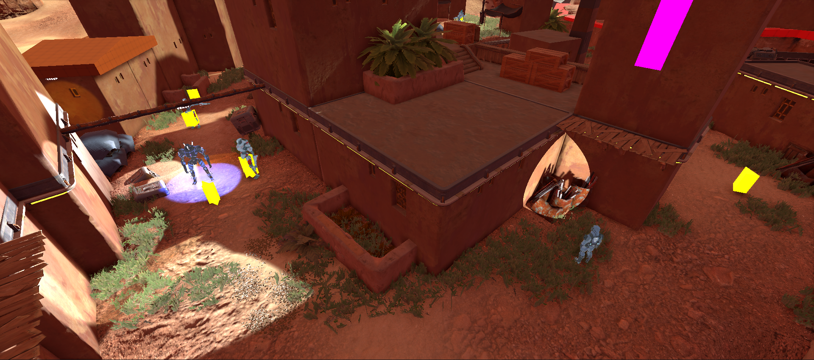
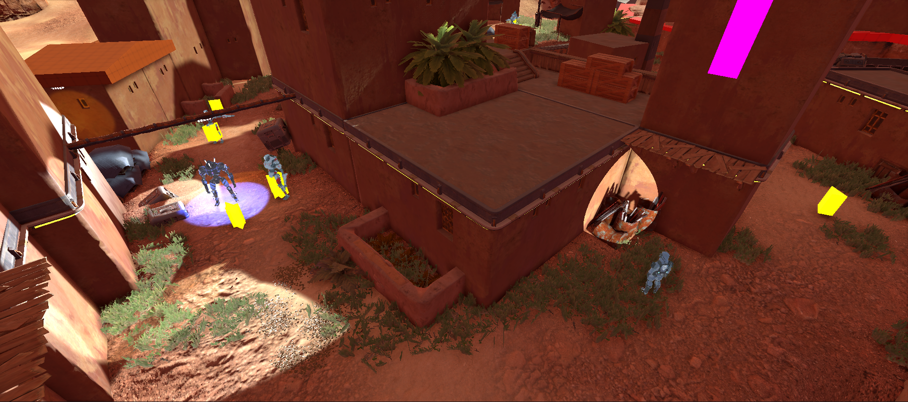

Ereban: Shadow Legacy is a fast-paced story-driven stealth platformer game where you become Ayana, the last descendant of a forgotten race. I was the main level designer in charge of the 8 levels from the game. My duties ranged from layout building, gameplay scripting, polish/finetunning to bug-fixing, all of this while working closely with the writers, the game directors and leads of every department.
Contributions
- Principal Level Design
- Layout and blockout creation
- Encounter design and AI high-level settings
- Quest design and prototyping
- Gameplay and Dialogue Scripting
- Polish and bug-fixing
The Main Mechanic and its influence in the Level Design
In Ereban, the main character has the ability of merging with the shadows and moving freely through them. You can stay in this state as long as you have stamina and you're not hit by light.
When you're inside the shadows, you're totally undetectable. This allows you to smoothly advance under the enemy's feet, suddely appear behind their backs or conviniently disappear right in front of their noses.
The Shadow Merge also means a big advantage in terms of mobility. Wherever there are shadows, you can climb walls and reach high and otherwise inaccesible places.


The possibilites this mechanic offers are countless, as well as its constraints. A blinking light, an object that casts a complex shadow, the position of the Sun and time of day (mid-day, sunset...) are just examples of the many factors that influence the level design of certain area.
Due to the morality component (killing enemies is not mandatory and has its consequences) of the game, ensuring different paths and playstyles for both lethal and non-lethal players was always a priority to have in mind. I worked towards making these two opposite paths equally attractive and challenging in their own ways, offering diverse routes to approach every combat zone of the game.
Aside from the Shadow Merge, there are plenty of other optional shadow powers and gadgets you can unlock in order to improve Ayana’s mobility and combat skills.
As a level designer it was a fun challenge to create room and situations for these abilities to shine, but without compromising the base design in case players didn't have certain abilities at that point. My mantra was "not frustrating without, but fun if used here".
Examples of this are creating vantage points to study enemy paths with the binoculars, placing to enemies near each other for a double mine explosion, or playing with enemy sightlines to create sweet spots for the decoy to be placed.
What these powers all have in common is that they need certain collectables, hidden across all levels, to be crafted. I would often place them in secondary zones and accesible by not-so-obvious shadow paths, rewarding the freedom of explorationthat Ereban’s great mobility encourages.


Quest Design and Scripting
Many quests take place in Ereban levels. Some of them are part of the main story and others are there just to earn optional rewards and add a layer of complexity to our protagonists. Apart from whiteboxing, I had a heavy scripting role during the project and it was my duty to prototype early versions of the quests and test their viability.
I was in charge of quest design from scratch (what actually happens in this quest, how many steps does this mission have, what must the player do / go in order to advance to the next step, what are the win/lose conditions of the mission as a whole, are there any rewards…). After pitching the idea to the design, art, narrative and technical leads and having the green light, I would jump right in into the editor to start prototyping.
Due to the diverse nature of the quests and the overall light-hearted vibe of Ereban, I would often see myself scripting a wide range of different and bizarre features. Chasing a bird from roof to roof, using a hand-drawn map to find a plushie, shadow-climbing a radio tower to take down the communications… prototyping quests that share so little in common was definitely a challenge but overall contributed to the levels feeling unique and memorable in their own way.
Later on development, and using a set of tools by the technical team, I added a layer of complexity implementing custom cutscenes and animations into quests sequences and dialogues. By giving each voiceline specific gesture animations and camera shots we reached the level of polish and life into our characters we were looking into.
Gallery


Blockout vs Final Art Gallery


 



What the Press says